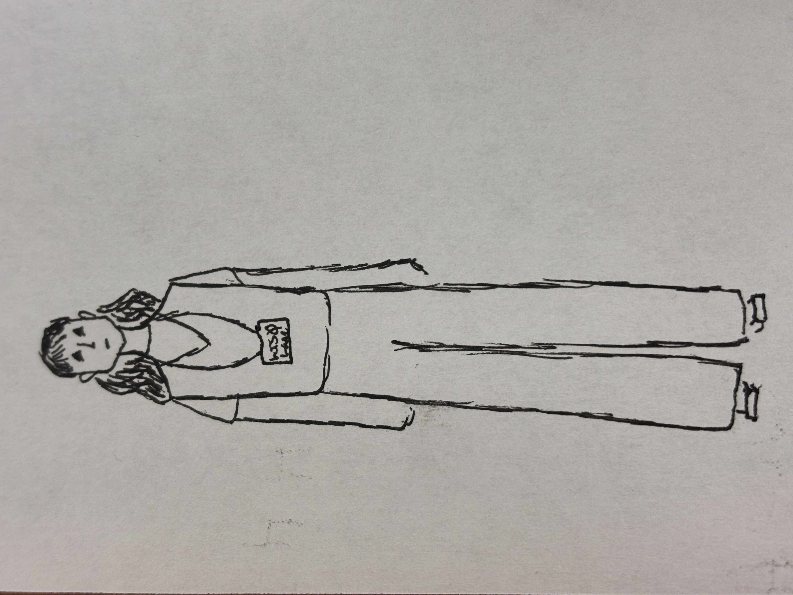

Lois Lane is the best reporter at the Daily Planet. She wants Lex Luthor dead. She wears a lot of purple. She's incredibly funny. I am her biggest fan.
He is the second best (?) reporter at the Daily Planet. He is also Superman! It's very fun. He fakes his death at one point.
He is a super evil capitalist. I want him dead. He is ocassionaly a good guy, but man those instances are few and far between.
Fun fact about Maggie Sawyer! She made it to the Gotham PD at one point and started dating Batwoman. So awesome.